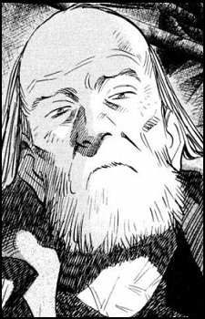
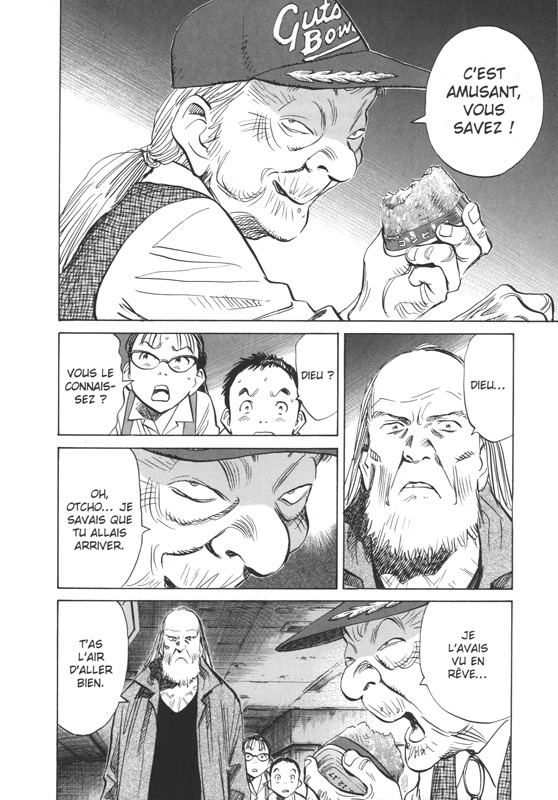
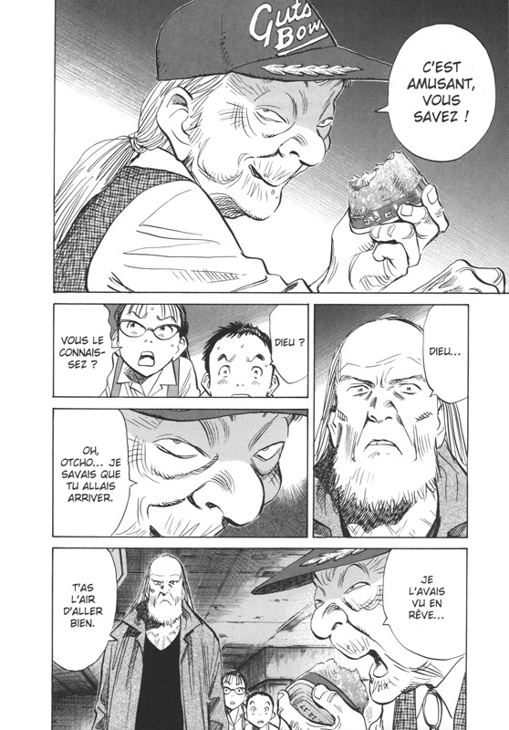

LES PROTAGONISTES DE 20TH CENTURY BOYS NE SONT PAS SEULEMENT NOMBREUX, ILS ONT AUSSI LA PARTICULARITÉ DE VIEILLIR... ET DE CHANGER CONSIDÉRABLEMENT AU FIL DU TEMPS.
AMI
Fukube est le premier à porter le masque d’Ami, l'identité secrète dont il est à l'origine. Pour autant, «Ami» ne désigne seulement pas un individu spécifique, mais plutôt un concept identitaire interchangeable : si Katsumata succède bel et bien à Fukube en 2015, les deux hommes échangeaient jusqu’ici tour à tour le masque du gourou.
Fukube est fier de son véritable prénom, « Hattori », qui est aussi celui d'un célèbre héros ninja des années 1960. Tous ses camarades l'appellent pourtant « Fukube » à cause d’une mauvaise lecture des idéogrammes de son prénom.
UNE OBSESSION NOMMÉE KENJI
Fukube voue un véritable culte à Kenji, dont il cherche désespérément à intégrer la bande. Dans cette optique, au cours de l'été 1969, le petit garçon solitaire invite Kenji et ses amis à lire son impressionnante collection de mangas. Le groupe se réjouit de cette opportunité mais ignore sciemment Fukube dès qu’il cherche à en savoir plus sur leur « base secrète » et leur « cahier de prédictions ».
Après le départ précipité de ses camarades, Fukube, frustré, s’introduit en cachette dans leur base secrète, et parcourt le cahier de prédictions. Il invite ensuite Sadakiyo, qui l'observe en cachette, à le rejoindre. Fukube accepte de devenir son copain mais l’informe qu’il devra désormais l’appeler « Ami ».
À défaut d’avoir intégré la bande de Kenji, Fukube peut désormais se targuer d’avoir son propre groupe, constitué de Yamane et de Sadakiyo. Le trio commence à écrire son propre cahier de prédictions. Fukube se découvre une nouvelle obsession : l’exposition universelle d’Osaka, prévue à l'été suivant. Il en parle à Kenji, qui partage pour une fois son intérêt : Fukube est ravi de susciter la curiosité de son camarade, qui transmet à son tour sa passion pour l’exposition à l’ensemble de la classe.
PRÉSIDENT DU MONDE
Le monde est plus que jamais soumis à sa volonté : un mur géant est construit tout autour de Tokyo, la société est divisée entre citoyens vaccinés et non vaccinés… En l’an 3 après Ami, Manjûme tente de faire assassiner son ancien mentor. Katsumata finit par « confesser » ses mensonges et ses crimes au monde entier : prêt à migrer sur Mars, il annonce la destruction du monde en sept jours. Il laisse par ailleurs éclater au grand jour son obsession pour Kenji puisqu’il s’exclame : « Kenji! Viens jouer avec moi! » au cours de cette « allocution ».
Alors que Fukube vouait un véritable culte à Kenji, Katsumata le déteste : il garde en effet rancune à « l’empereur du mal » d’être resté silencieux pendant son humiliation publique.
Ami meurt écrasé sous les débris de l’une de ses soucoupes volantes. Kenji accepte toutefois d'exaucer sa dernière volonté en interprétant Bob Lennon.
La mort du gourou ne préserve pas l'humanité d'un dernier danger. Les efforts conjugués de Kenji et de ses camarades finissent toutefois par contrecarrer définitivement ses projets destructeurs
KENJI ENDÔ
Kenji est né le 20 août 1960 mais, comme il l'apprend à l'âge adulte, il a bien failli ne jamais voir le jour : sa mère avait en effet sérieusement songé à avorter par manque de moyens. Elle s’est finalement laissée convaincre de garder son bébé par sa fille Kiriko, prête à devenir la «maman » du futur nouveau-né…
LE CHEF DE LA BANDE
À l’enfance, Kenji s’impose naturellement comme le chef de sa bande d’amis : il se charge notamment d’écrire et d’illustrer leur cahier de prédictions. Son apparente bravoure lui vaut l’admiration de ses camarades, même s’il ne fait souvent que cacher sa peur lorsqu’il accompagne Otcho dans des endroits hantés. Kenji et Yukiji – la seule fille du groupe – sont amoureux l'un de l'autre mais n'osent jamais se l'avouer.
En 1970, Kenji meurt d’envie d’aller à l’exposition universelle d’Osaka mais se voit emmené à la mer par ses parents. Il regrettera cette occasion manquée toute sa vie.
Ce même été 1970, Kenji se rend à la villa de côte de la pendue avec sa bande, afin d’y trouver des fantômes. Après que tous ses camarades aient quitté les lieux, soulagés d'avoir seulement découvert un drap suspendu en guise « d'esprit », Kenji accompagne Otcho à l’étage : les deux amis pensent avoir aperçu quelque chose s’y faufiler. Le duo s’enfuit à toutes jambes après avoir été effrayé par le mystérieux reflet d’un vieux miroir.
PÈRE DE SUBSTITUTION ET TERRORISTE MALGRÉ LUI
Au milieu des années 1990, Kenji a transformé la boutique d’alcool familiale en supérette. Kiriko lui confie sa fille Kanna, encore bébé, en 1997, avant de disparaître. Le quotidien sans histoire de Kenji bascule à la mort de Donkey. Kenji a du mal à croire à son suicide : il finit par découvrir que son ami d’enfance enquêtait sur la secte d’un dénommé Ami, qui a repris le symbole de leur bande.
Après avoir réalisé que le gourou réalisait ses prédictions d’enfance à la lettre, Kenji parvient à retrouver son cahier de prédictions. Il reforme sa bande en l’an 2000, après des années de lutte solitaire, qui lui valent d’être considéré comme un « terroriste » activement recherché par la police. L’ancien gérant de convini est obligé de vivre dans les sous-sols de Tokyo.
C'est à cette période qu'il compose sa chanson phare, Bob Lennon, en hommage à John Lennon et Bob Dylan. Il l'enregistre sur cassette et l'interprète régulièrement dans la rue, sans rencontrer un grand succès...
OTCHO
Choji Ochiai , souvent appelé Otcho ou Shogun , est l'un des principaux protagonistes et le meilleur ami de Kenji. Il était le co-leader du groupe de jeunes de Kenji (étant celui qui a créé leur « symbole d'amitié ») et du groupe de Kenji.
LE CERVEAU DE LA BANDE
À 27 ans, il quitte sa famille après la perte de son fils et part en Inde. Là, il rencontra un moine qui lui apprit comment acquérir sa force intérieure et comment surmonter ses malheurs et son désespoir. En Thaïlande, il a fait exploser l'usine Rainbow Kid, qui produisait un médicament créé par Friend. Après un appel téléphonique de Kenji, Otcho retourne au Japon en 1999 pour combattre Friend. Il a été capturé après le réveillon sanglant du Nouvel An et mis en prison. En 2014, il éclate avec le mangaka Kakuta et part à la recherche de Kanna .
Il est surtout l'inventeur du symbole utilisé par ses amis, qui est un mélange entre le logo du Shônen Sunday incitant le lecteur à tourner la page et son surnom de l’époque (« Otcho les gros yeux »). S'il rêve, comme ses camarades, de devenir un justicier, Otcho s'éloigne petit à petit du groupe après avoir découvert le rock et le mouvement « peace & love » chez un voisin hippie.
TREIZE ANS PASSÉS DERRIÈRE LES BARREAUX
Le soir du 31 décembre 2000, il parvient presque à grimper sur le robot géant aux côtés de Kenji. Il est ensuite incarcéré à la Luciole des mers, ancien complexe commercial transformé en prison au beau milieu de la baie de Tokyo, en tant que « terroriste ». Le matricule N°3 – preuve qu'il fait partie des premiers détenus – tente régulièrement de s'échapper pendant ses treize années de détention.
Shôgun y parvient enfin en 2014 grâce à l'aide de Kakuta. Il découvre alors pour la première fois le Tokyo du XXIème siècle, on ne peut plus différent de celui qu’il imaginait enfant. Otcho fait tout pour retrouver Kanna et la protéger du danger qui la guette. L'ancien détenu surgit in extremis à l’église de Shinjuku pour protéger la nièce de Kenji, au péril de sa vie. Il finit ensuite par retrouver ses compagnons, qui continuent eux aussi leur lutte contre le gouvernement d'Ami.
KANNA ENDÔ
Kanna est la fille de Kiriko et de Fukube : sa mère la confie à Kenji peu après sa naissance, en 1997, juste avant de disparaître. La petite fille est donc élevée par son oncle dès son plus jeune âge, et le considère à juste titre comme son père.
Les étranges pouvoirs de Kanna se manifestent très tôt : bébé, elle est déjà capable de deviner la valeur des cartes ou encore de tordre des cuillères sans utiliser ses mains. Des capacités étonnantes qui lui valent d'être surnommée « l'enfant du destin » par Ami. Ses adeptes tentent même de kidnapper Kanna mais Kenji et Yukiji arrivent à temps pour la protéger.
UNE ENFANCE ATYPIQUE

En l’an 2000, la petite fille de trois ans mène un quotidien pour le moins original : elle habite en effet dans les sous-sols de Tokyo, avec Kenji et ses amis d’enfance, qu’elle considère également comme ses oncles. Kanna aime plus que tout écouter son oncle chanter Bob Lennon dans la rue, et partager des ramens dans leur restaurant favori. Des plaisirs simples qui prennent brutalement fin lorsque Kenji l'envoie à Yamagata avec sa grand-mère pour les protéger, à l'approche de la fin du siècle.
Le 31 décembre 2000 au soir, Kanna parvient cependant à revenir toute seule à Tokyo, pour être aux côtés de son oncle. Le guitariste la confie alors à Dieu avant d’affronter le robot qui ravage la ville.
UNE ADOLESCENTE À PROBLÈMES
En 2014, la réputation de Kanna, devenue adolescente, n'est plus à refaire : son fort caractère et son franc-parler lui valent de nombreux ennuis depuis qu'elle a quitté la maison de sa grand-mère pour s'installer à Tokyo, dans la pension Tokiwa. Yukiji, qui est devenue sa tutrice, essaye tant bien que mal de l’inciter à faire profil bas pour éviter des ennuis avec le régime totalitaire d’Ami. Sans succès : Kanna écoute en permanence Bob Lennon sur son vieux baladeur, en souvenir de son oncle disparu, dont elle porte la vieille casquette.
Kanna déteste la police et, plus généralement, tout symbole de l’autorité d’Ami. Elle se crée souvent des problèmes en criant à qui veut l’entendre que son oncle n’était pas un terroriste. L'adolescente finit toutefois par comprendre, au contact de Chôno, que tous les policiers ne sont pas à la solde d’Ami.
Après un passage remarqué dans un casino mal famé, la lycéenne organise un grand rassemblement à l’église de Shinjuku, qui lui permet d'unifier les mafias thaïlandaise et chinoise pour empêcher le meurtre du pape planifié par Ami. Kanna échappe cependant de justesse à la mort au cours de ce rassemblement : elle est sauvée in extremis par Otcho. Et sermonnée par Yukiji après cet incident...
 
